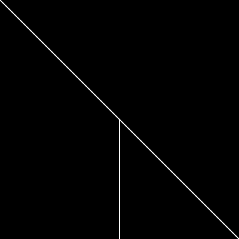

Your sketch:
Edit the existing code in exercise1-2/sketch.js to produce the output shown below.
When you are done, check your work using check-exercise1-2.html.
Expected output:

You only need to edit sketch.js.
Compare the output of your sketch to the expected output and look very carefully at the code in sketch.js. There are two things to fix:
Some useful links in the p5.js documentation: